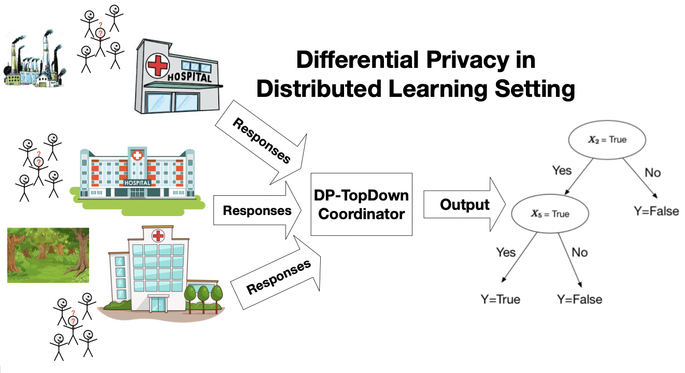
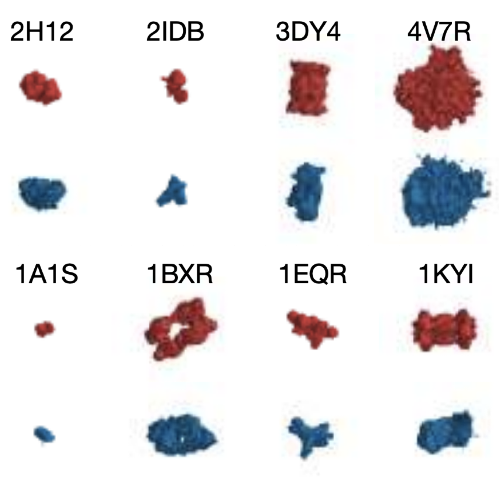
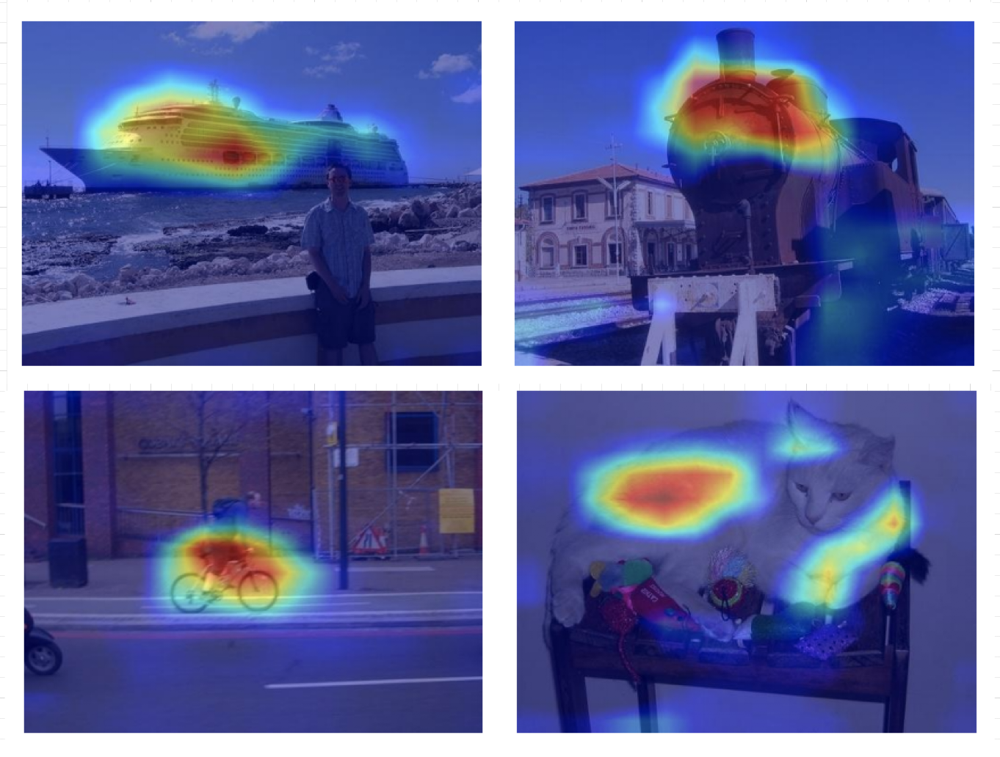
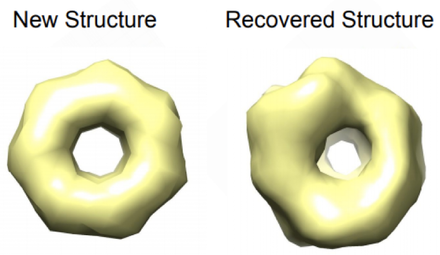
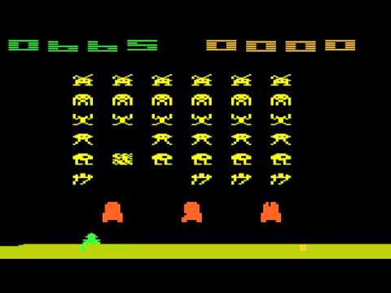
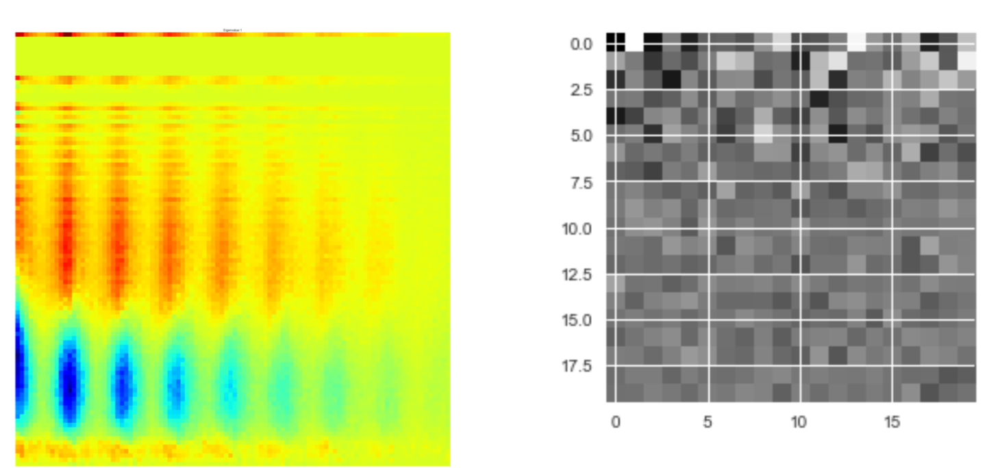
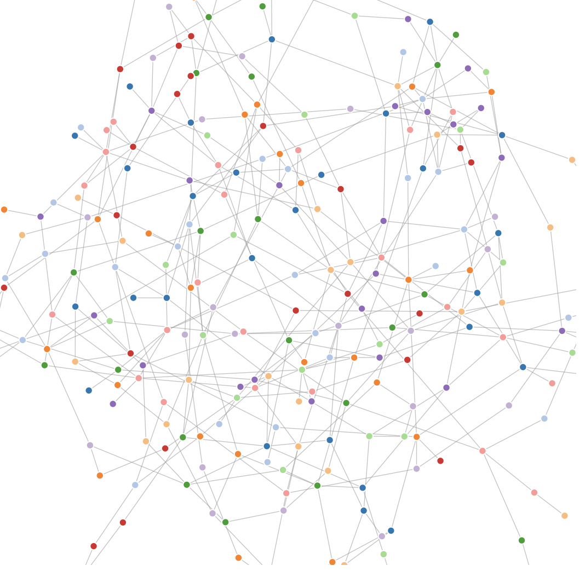
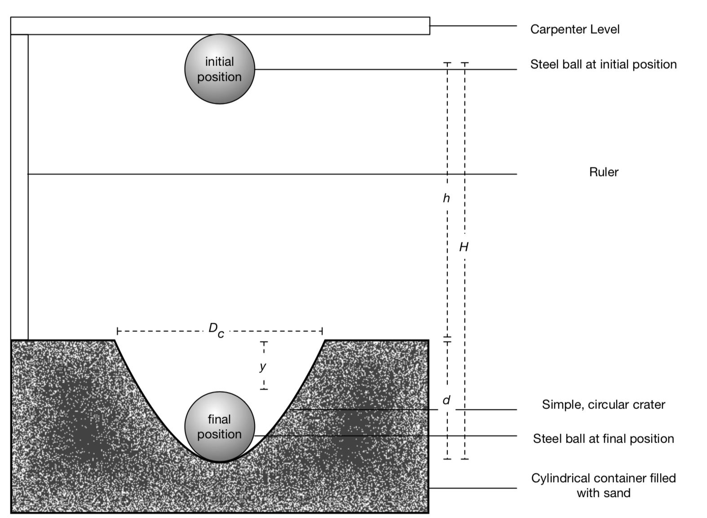

I am currently studying Computer Science and Mathematics at Carnegie Mellon University, with a focus on machine learning and distributed systems. I have been advised by Professor Min Xu from Computational Biology Department. I am doing research in differential privacy with Professor Nina Balcan. I am also doing research on Eureka with Professor Satya.
I am currently applying for Ph.D. programs in Computer Science and/or Machine Learning!
Github
Google Scholar
Resume
Calendar
kaiwenw1 [at] cs.cmu.edu
|  |
Differentially Private, Distributed Decision Trees
Kai Wen Wang, Travis Dick, Nina Balcan To be available soon! 15-400 Milestones |
|  |
Image-derived generative modeling of pseudo-macromolecular structures --- towards statistical assessment of electron cryotomography template matching
Kai Wen Wang, Xiangrui Zeng, Xiaodan Liang, Zhiguang Huo, Eric P. Xing British Machine Vision Conference 2018 paper poster |
|  |
Respond-CAM: Analyzing deep models for 3D imaging data by visualizations
Guannan Zhao, Bo Zhou, Kai Wen Wang, Rui Jiang, Min Xu International Conference On Medical Image Computing & Computer Assisted Intervention 2018 paper |
|  |
Multi-task Learning for Macromolecule Classification, Segmentation and Coarse Structural Recovery in Cryo-Tomography
Chang Liu, Xiangrui Zeng, Kai Wen Wang, Qiang Guo, Min Xu British Machine Vision Conference 2018 paper |
|  |
Reinforcement Learning Assembly (ReLA)
Facebook AI Research code |
|  |
Classifying Blazars and Cataclysmic Variables from the Catalina Real-Time Transient Survey
10-701 Class Project paper |
|  |
Erdos-Renyi Random Graph Visualizer
link |

|
Mazify!
15-112 Class Project code demo video |
|  |
Determining the media composition dependence of low-energy impact cratering
High School "Senior Thesis" in Physics paper |